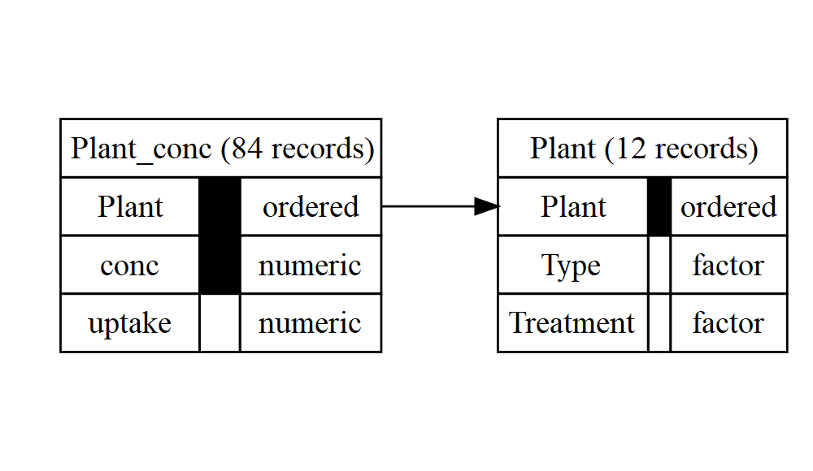

autodb is an R package for automatic normalisation of a data frame to third normal form, with the intention of easing the process of data cleaning. (Usage to design your actual database for you is not advised.)
Installation
Install the stable released version from CRAN with:
install.packages("autodb")Install the unstable development version from GitHub with:
# install.packages("devtools")
devtools::install_github("CharnelMouse/autodb")Example
Turning a simple data frame into a database:
library(autodb)
#>
#> Attaching package: 'autodb'
#> The following object is masked from 'package:stats':
#>
#> decompose
summary(ChickWeight)
#> weight Time Chick Diet
#> Min. : 35.0 Min. : 0.00 13 : 12 1:220
#> 1st Qu.: 63.0 1st Qu.: 4.00 9 : 12 2:120
#> Median :103.0 Median :10.00 20 : 12 3:120
#> Mean :121.8 Mean :10.72 10 : 12 4:118
#> 3rd Qu.:163.8 3rd Qu.:16.00 17 : 12
#> Max. :373.0 Max. :21.00 19 : 12
#> (Other):506
db <- autodb(ChickWeight)
db
#> database with 2 relations
#> 4 attributes: weight, Time, Chick, Diet
#> relation Chick: Chick, Diet; 50 records
#> key 1: Chick
#> relation Time_Chick: Time, Chick, weight; 578 records
#> key 1: Time, Chick
#> references:
#> Time_Chick.{Chick} -> Chick.{Chick}
graphviz_text <- gv(db)
DiagrammeR::grViz(graphviz_text)Using the exclude argument to forbid certain variables from appearing in keys:
summary(CO2)
#> Plant Type Treatment conc uptake
#> Qn1 : 7 Quebec :42 nonchilled:42 Min. : 95 Min. : 7.70
#> Qn2 : 7 Mississippi:42 chilled :42 1st Qu.: 175 1st Qu.:17.90
#> Qn3 : 7 Median : 350 Median :28.30
#> Qc1 : 7 Mean : 435 Mean :27.21
#> Qc3 : 7 3rd Qu.: 675 3rd Qu.:37.12
#> Qc2 : 7 Max. :1000 Max. :45.50
#> (Other):42
db2_noexclude <- autodb(CO2)
db2_noexclude
#> database with 3 relations
#> 5 attributes: Plant, Type, Treatment, conc, uptake
#> relation Plant: Plant, Type, Treatment; 12 records
#> key 1: Plant
#> relation Plant_conc: Plant, conc, Treatment, uptake; 84 records
#> key 1: Plant, conc
#> key 2: Treatment, conc, uptake
#> relation conc_uptake: conc, uptake, Type; 82 records
#> key 1: conc, uptake
#> references:
#> Plant_conc.{Plant} -> Plant.{Plant}
#> Plant_conc.{conc, uptake} -> conc_uptake.{conc, uptake}
graphviz_text2_noexclude <- gv(db2_noexclude)
DiagrammeR::grViz(graphviz_text2_noexclude)
db2 <- autodb(CO2, exclude = "uptake")
db2
#> database with 2 relations
#> 5 attributes: Plant, Type, Treatment, conc, uptake
#> relation Plant: Plant, Type, Treatment; 12 records
#> key 1: Plant
#> relation Plant_conc: Plant, conc, uptake; 84 records
#> key 1: Plant, conc
#> references:
#> Plant_conc.{Plant} -> Plant.{Plant}
graphviz_text2 <- gv(db2)
DiagrammeR::grViz(graphviz_text2)
There are also functions for doing each step of the database creation separately, including functional dependency detection and normalisation. See the vignette for more details.